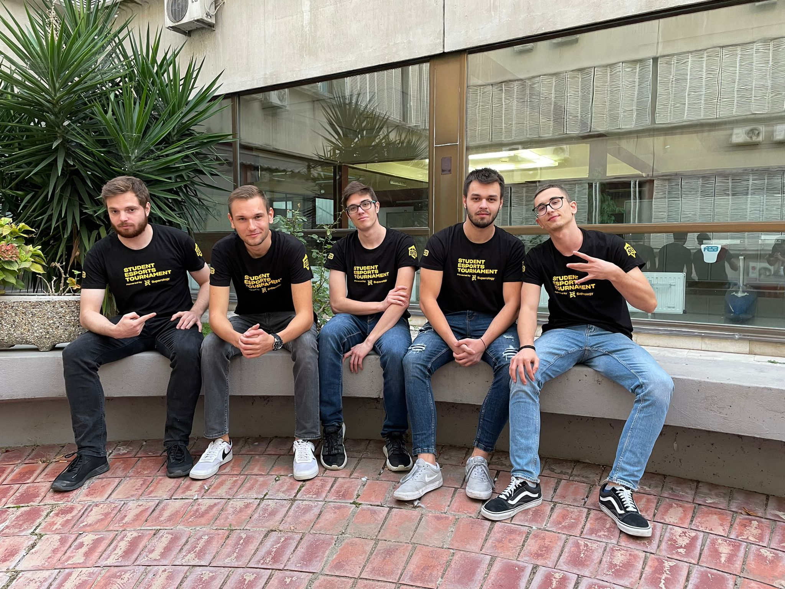

FESB se već godinama natječe u E-Sport natjecanjima u Hrvatskoj. Neki od tih turnira se organiziraju u sklopu Sveučilišta u Splitu gdje timovi sa različitih fakulteta se natječu jedno protiv drugog za titulu prvaka Splita. Pobjednici nakon nekoliko mjeseci odlaze na državno natjecanje u Zagrebu Unisport HR.
Uz službena Sveučilišna natjecanja svake godine se održavaju i još 2 turnira. Jedan od njih je STEM Games, koji se zadnje dvije godine održavao Online radi pandemije ali se ove godine vraća u Rovinj u peti mjesec gdje će se mnogo fakulteta natjecati u svakakvim disciplinama u sportu i E-Sportu.
Zadnji organizator je Student Esports Tournament by Superology koji svaki semestar održava ligu za više disciplina u E-Sportu za tehničke fakultete u Hrvatskoj. U zadnjem izdanju FESB je završio na četvrtom mjestu iza TVZ-a, FER-a i FOI-a. U 5 disciplina (FIFA, CSGO, LOL, RL, PUBG) osvojili smo prvo mjesto u Counter Strike-u i treće mjesto u Rocket League-u.
